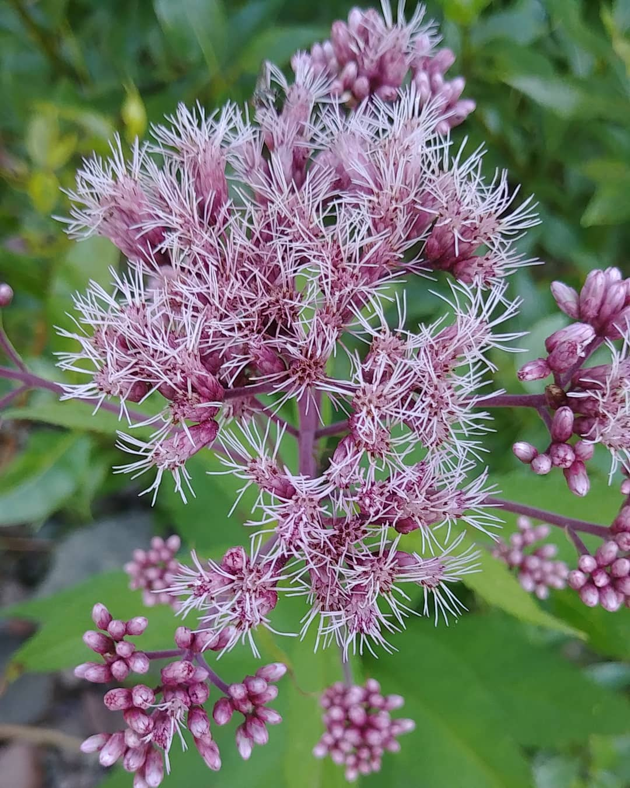
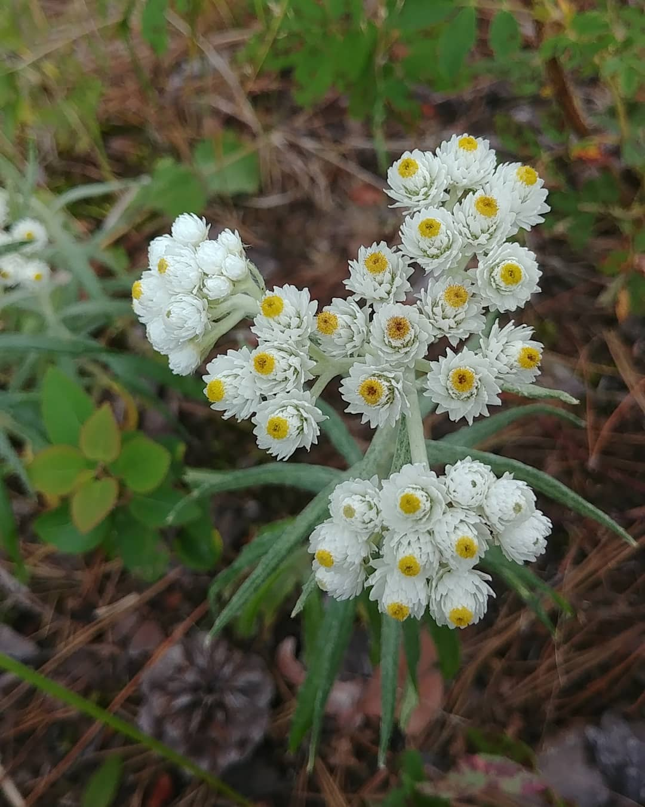
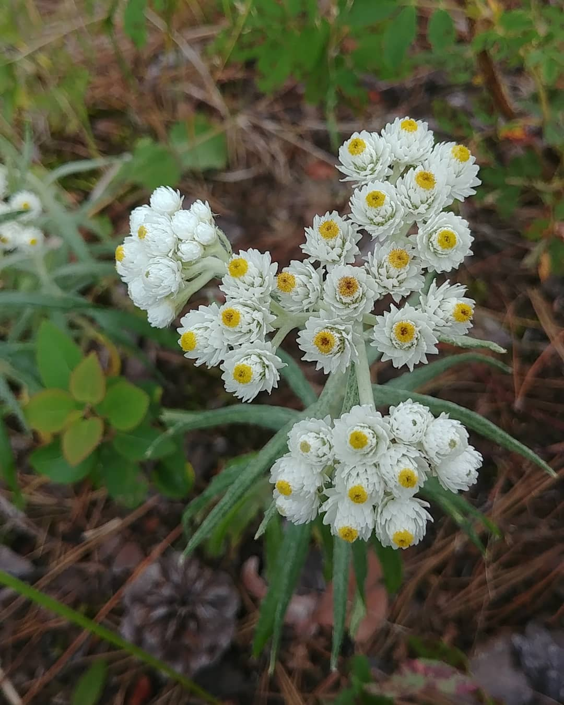
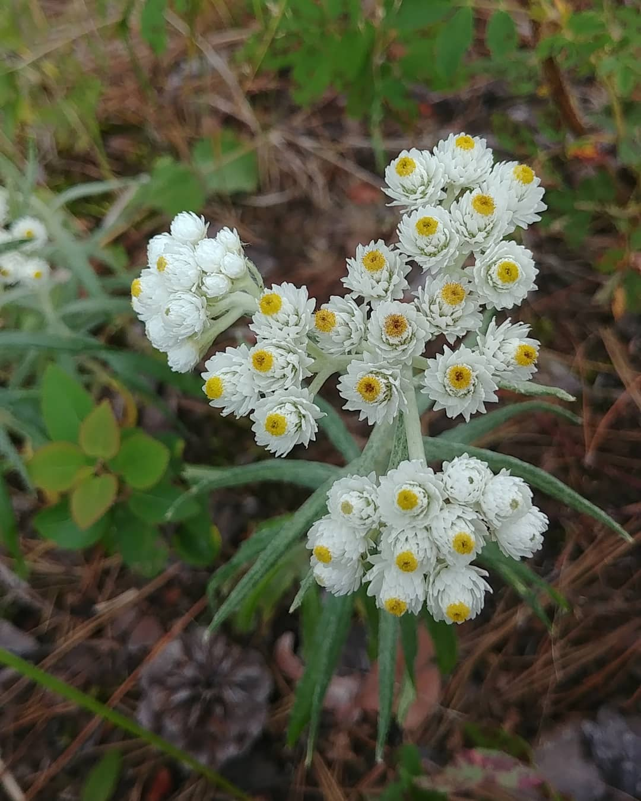

Cool plants and animals that I find along my walk. Mainly plants because they're less likely to run away. 🌱 This is an alternative site to my instagram, so you don't have to make an account just to look at plants. Instagram account is: @thefloraandfaunawalks
-
{link}

 

